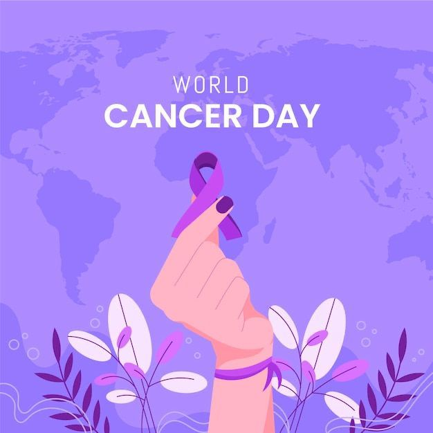

| |
|||||||||
|---|---|---|---|---|---|---|---|---|---|
| World Cancer Day is an international day marked on 4 February to raise awareness of cancer and to encourage its prevention, detection, and treatment. World Cancer Day is led by the Union for International Cancer Control (UICC) to support the goals of the World Cancer Declaration, written in 2008. The primary goal of World Cancer Day is to significantly reduce illness and death caused by cancerand is an opportunity to rally the international community to end the injustice of preventable suffering from cancer.The day is observed by the United Nations.World Cancer Day targets misinformation, raises awareness, and reduces stigma.Multiple initiatives are run on World Cancer Day to show support for those affected by cancer. One of these movements are #NoHairSelfie, a global movement to have "hairticipants" shave their heads either physically or virtually to show a symbol of courage for those undergoing cancer treatment. |
|||||||||
| World Cancer Day was established on 4 February 2000 at the World Cancer Summit Against Cancer for the New Millennium, which was held in Paris.The Charter of Paris Against Cancer, which was created to promote research, prevent cancer, improve patient services, also included an article establishing the anniversary of the document's official signing as World Cancer Day, was signed at the Summit by the then General Director of UNESCO, KÅichirÅ Matsuura, and then French President Jacques Chirac in Paris on 4 February 2000. n recent years, cities have begun to support the day by lighting up important landmarks in orange and blue. In 2019, 55 landmarks in 37 cities participated in the landmark lighting initiative.At least 60 governments officially observe World Cancer Day. | |||||||||
|  | |||||||||
| |
|||||||||